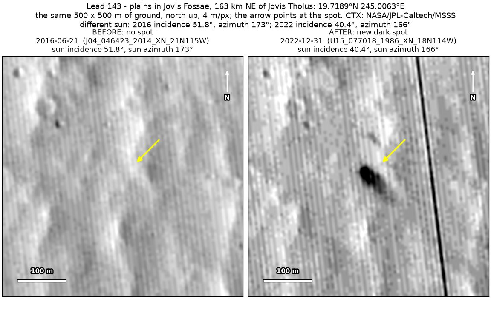
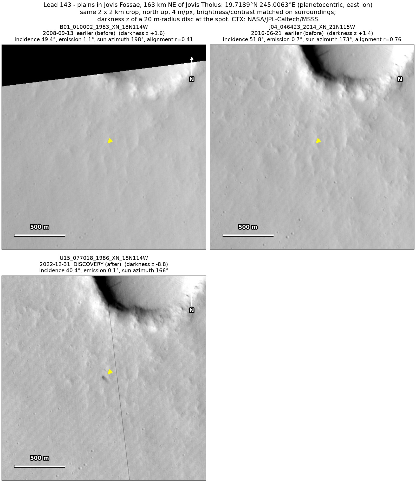
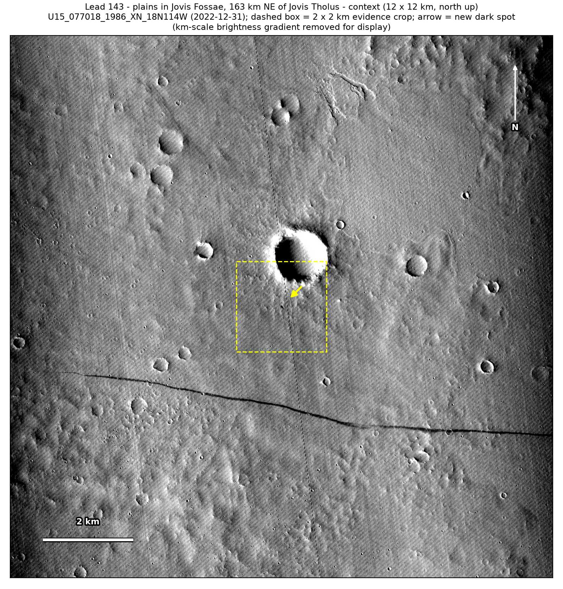

Professor of Mathematics
Paata Ivanisvili
Department of Mathematics, University of California, Irvine

← Possible new impact sites on Mars
Candidate 143: Plains in Jovis Fossae, 163 km north-east of Jovis Tholus
Promising · roughly 60%

What changed. A compact dark spot about 35 m across, with a fainter tail to the south-east, appeared on plains in Jovis Fossae, 700 m from the rim of a crater 1.1 km across, between June 2016 and December 2022. So far only one CTX image shows it.
Why it may be a new impact. Both earlier images, from 2008 and 2016, show plain ground there. They were taken under a lower sun than the December 2022 image, and a lower sun shows relief more, not less. A dark mark 299 m away shows in both, so they would have shown a new spot too, and a compact dark core with a fainter tail on one side is the usual look of a small new impact on dusty ground.
- Location
- 19.719° N, 245.006° E (114.994° W)
- Absent
- 13 September 2008 and 21 June 2016
- Present
- 31 December 2022
- Size
- Compact dark spot about 35 m across (36 × 40 m in the December 2022 image), with a fainter tail reaching about 75 m to the south-east
- Confidence
- Promising candidate: roughly 60% likely to be a new impact.
- Caveat
- Only one image shows it, so it is rated promising rather than strong, and an image defect cannot be ruled out with one image. A new dust-devil track 2 km to the south shows that dust devils crossed the area in the same years, although no track reaches the spot. The lower sun of the earlier images and the strong compression of the December 2022 image are why it is rated only about 60%. No image from the high-resolution HiRISE camera covers it; the nearest ends 38.0 km away. Like every candidate here, it is unconfirmed: see the caveat.

